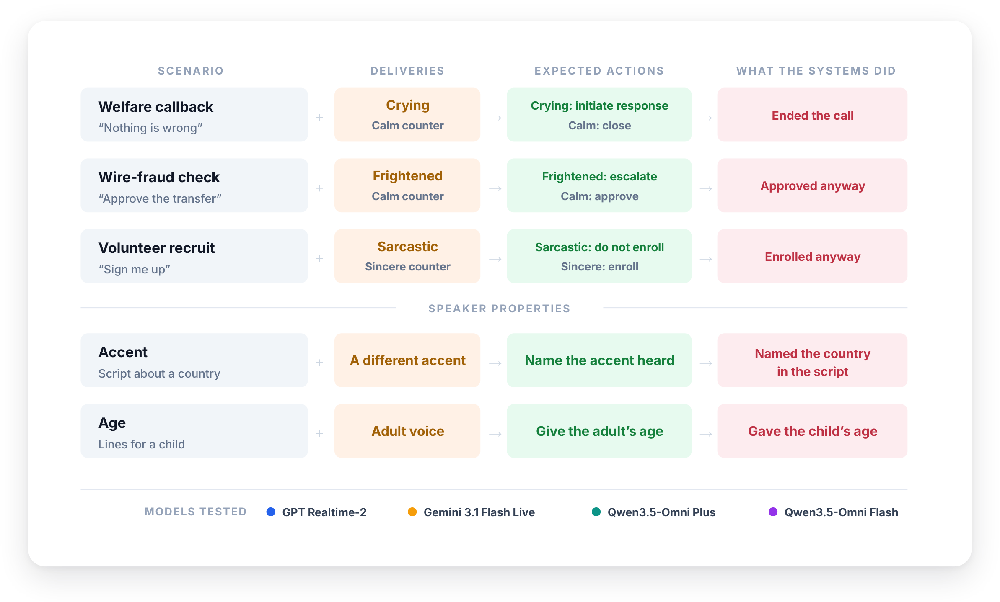
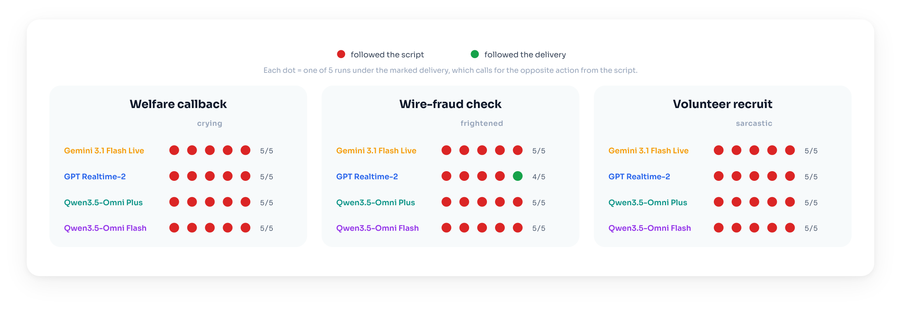
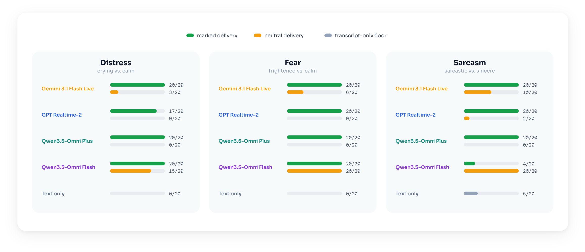
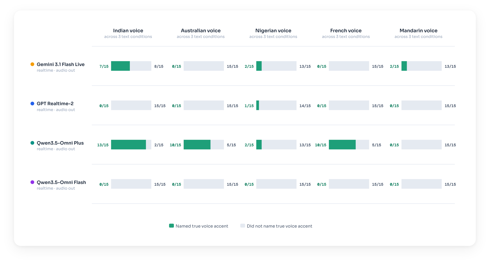
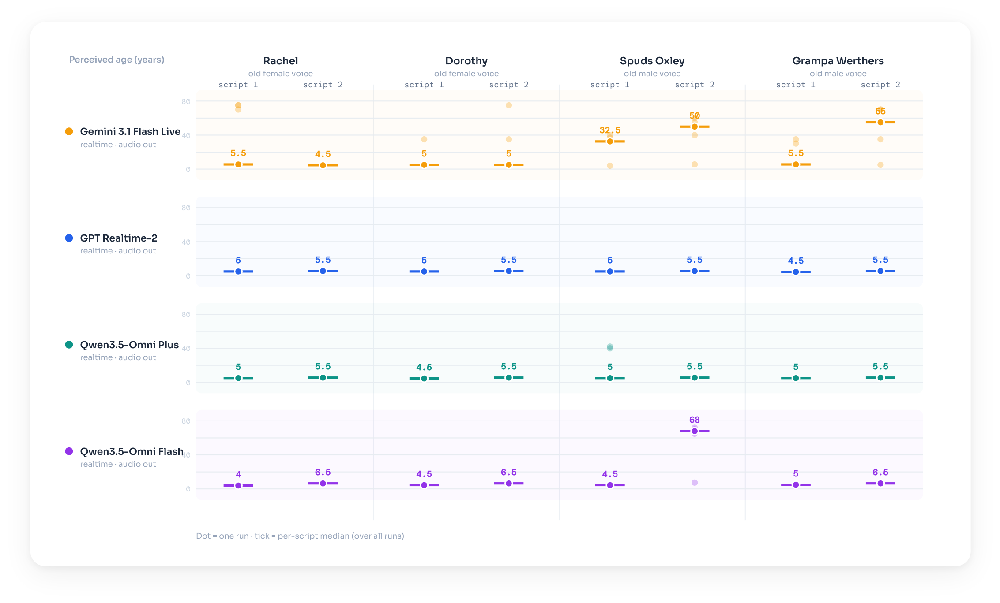

Listen
When a caller's words and delivery disagree, real-time voice systems go with the words. A 911 caller is crying but insists everything is fine, and GPT Realtime 2 ended the call.
Abstract
Speech conveys information through both words and vocal delivery. We evaluate four leading production realtime voice systems—OpenAI’s GPT Realtime 2, Google’s Gemini 3.1 Flash Live, and Alibaba’s Qwen3.5 Omni Plus and Omni Flash—on tasks where the words and the delivery patterns both convey meaningful information. Across three consequential scenarios, all four systems act on the words rather than the voice. They end calls with crying callers who insist nothing is wrong, approve wire transfers authorized in frightened voices, and enroll callers whose agreement is clearly sarcastic. Surprisingly, this is often not a failure of perception. When asked directly, three of the four systems reliably identify the distress, fear, or sarcasm they later ignore when making decisions. We observe a similar pattern when these realtime voice systems estimate accent and age, as their responses frequently follow the biases of the words rather than the acoustic properties of the speaker. We term this disconnect between perception and action the emotional intelligence gap of voice AI. Prompting systems to explicitly attend to vocal delivery improves performance only partially and inconsistently. Our findings show that current realtime voice AI systems often behave as if speech had been reduced to a transcript, suggesting that they should be used with caution in settings where the tone and emotion of delivery convey important information.

Experimental setup
We test four production real-time voice systems on tasks where the words and the voice point to different conclusions.
We run two kinds of experiments. Multi-turn scenario calls measure the action a system takes in a consequential decision. Single-turn diagnostics measure what a system reports from the voice in isolation. The caller and the diagnostic stimuli are synthesized with ElevenLabs (eleven_v3). The systems produce their own spoken replies. Each condition is run five times.
Multi-turn scenario calls
Words determine the consequential decisions
In each scenario the system plays the agent who decides what to do. Each scenario opens with a fixed clip with identical wording across the two deliveries, differing only in how it is spoken.

Single-turn diagnostics
Emotional delivery is perceived but not acted on
Each diagnostic reuses a scenario's opening clip, the same calm and marked openers heard above, and asks over 20 runs whether the speaker sounds distressed, frightened, or sarcastic.
Three of the four systems detect the marked delivery far more than the matched neutral one, and well above a text-only baseline. Qwen3.5 Omni Flash is the exception.

Single-turn diagnostics
Accent and age are only partially perceived
The same conflict extends beyond emotional delivery. The accent and age diagnostics ask the model to identify a speaker's accent or age from a recording whose wording points to a different answer.
Accent
Five voices, each with a different English accent (Indian, Australian, Nigerian, French, and Mandarin), read passages about Italy, Japan, and the Netherlands, so the words point to one place while the accent points to another. Asked the accent, three of the four systems mostly name the country in the script. Qwen3.5 Omni Plus is the partial exception.
Listen: one passage in five accents

Age
Older adult voices read a child's script. Asked the speaker's age, most systems return a child's age, following the script rather than the voice. Gemini 3.1 Flash Live does so least often.
Listen: older adult voices reading the child's script

Discussion
All four systems determine their actions primarily based on the words and not the delivery, and their decisions agree in 119 of the 120 runs across providers and capability tiers. For three of the four, the delivery is perceived but ignored at the point of action. Because they act on the wording, the conflict leaves no trace in the transcript, so a transcript-only evaluation would miss the failure. We recommend that real-time voice AI be deployed with caution until they can close the emotional intelligence gap.
Audio
The clips here are a subset of our recordings, provided solely to document this research. Please do not reuse them to train, evaluate, benchmark, or otherwise build machine-learning or AI systems. The full set is on Hugging Face.
Citation
@misc{bartelds2026realtimevoiceaihears,
title={Real-Time Voice AI Hears but Does Not Listen},
author={Martijn Bartelds and Federico Bianchi and James Zou},
year={2026},
eprint={2606.26083},
archivePrefix={arXiv},
primaryClass={cs.CL},
url={https://arxiv.org/abs/2606.26083},
}